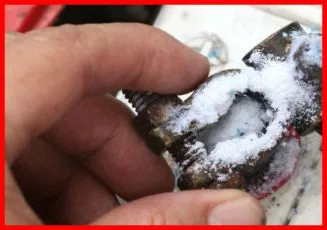
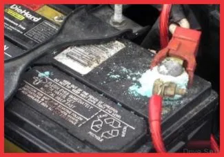
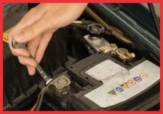
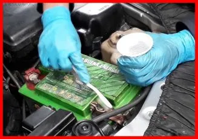
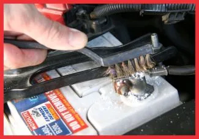
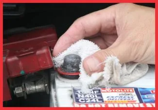
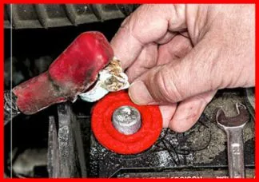
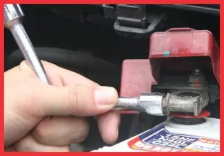
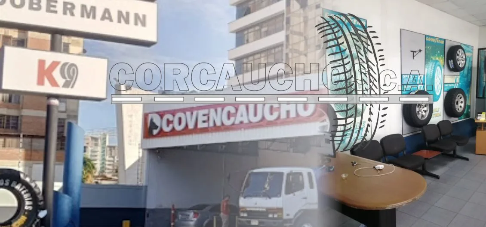

Secretos para una Batería Duradera: Cuidados Esenciales para un Rendimiento Óptimo
Publicado el
La batería de tu vehículo es la fuente de energía que permite que todo funcione correctamente. Sin el mantenimiento adecuado, su vida útil puede reducirse, dejándote varado en el peor momento. Hoy te compartimos los mejores consejos para prolongar su rendimiento y evitar fallos inesperados
Consejos clave para el mantenimiento de la Batería
1. Revisión periódica de la carga
Verifica el nivel de carga de la batería con un multímetro o en un taller especializado. Una batería baja puede indicar problemas en el alternador o en el sistema eléctrico.
2. Limpieza de los terminales
El óxido y la corrosión pueden afectar la conexión de la batería. Limpia los bornes con una mezcla de agua y bicarbonato de sodio, usando un cepillo de cerdas metálicas.
3. Evita descargas profundas
Si tu vehículo no se usa con frecuencia, la batería puede descargarse por completo. Para evitarlo, enciende el motor al menos una vez por semana y conduce durante unos minutos.
4. Cuida la batería en temperaturas extremas
Las baterías pueden perder rendimiento en climas muy fríos o cálidos. Estaciona el vehículo en lugares protegidos y evita exposiciones prolongadas a temperaturas extremas.
5. Revisión del sistema eléctrico
Un sistema eléctrico defectuoso puede sobrecargar o descargar la batería. Asegúrate de que el alternador y los cables están en buenas condiciones.


Pasos para limpiar los terminales de la batería:
1. Desconectar la batería:

Antes de iniciar la limpieza, apaga el vehículo y desconecta primero el cable negativo (-) y luego el positivo (+). Esto evitará cortocircuitos accidentales.
2. Preparar la solución limpiadora:
Mezcla una cucharada de bicarbonato de sodio con agua caliente. Esta solución ayudará a neutralizar la corrosión
3. Aplicar la Mezcla

Con un trapo limpio o con un cepillo dental, aplica la mezcla en los terminales y deja actuar durante unos minutos para disolver el óxido
4. Frotar con el cepillo:

Usa el cepillo de cerdas metálicas para limpiar los terminales y las abrazaderas del cable. Frota con firmeza hasta eliminar toda la suciedad.
5. Enjuagar y Secar

Usa un trapo húmedo para limpiar los restos de bicarbonato y deja secar completamente antes de volver a conectar la batería.
6. Aplicar Protección

Para evitar futuras acumulaciones de corrosión, coloca una pequeña cantidad de vaselina o coloca unos aros con grasa dieléctrica en los terminales. Esto servirá como barrera contra la humedad y el óxido
7. Reconectar la Batería

Vuelve a conectar el cable positivo (+) primero y luego el negativo (-), asegurándote de que los terminales estén bien ajustados.
¿Cuándo debemos reemplazar la batería?
Si notas que el arranque del vehículo es más lento, las luces se atenúan o que la batería tiene más de tres años de uso, es momento de considerar su reemplazo. Escríbenos para saber qué batería tenemos para tu vehículo.
CORCAUCHOS: Tu mejor Opción en Baterías en Barquisimeto
¿Necesitas ayuda con el mantenimiento de tu Batería? En CORCAUCHOS contamos con expertos que te asesorarán en la compra y el cuidado de tu batería.
💡 ¡Visítanos y mantén tu vehículo en perfecto estado!

¿Necesitas este servicio en Barquisimeto? Escríbenos y te atendemos.
Escríbenos por WhatsApp